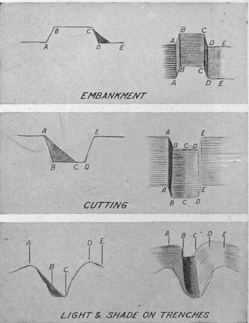

Chapter XXIX. The Interpretation Of Aerial Photographs
Description
This section is from the book "Airplane Photography", by Herbert E. Ives. Also available from Amazon: Airplane photography.
Chapter XXIX. The Interpretation Of Aerial Photographs
Oblique aerial photographs if on a large, enough scale are even easier to interpret than are ordinary photographs taken from the ground, since they practically preserve the usual view, and add to it the essentials of a plan. With verticals, however, this is far from the case. In them all natural objects present an appearance quite foreign to the ordinary mortal's previous experience of them. This may be easily demonstrated by taking any aerial view containing a fair amount of detail and trying systematically to identify each object. A necessary preliminary to doing this accurately is acquaintance with and study of the ground photographed, or of similar regions, and of objects of the same character as those likely to be included.
The interpretation of military aerial photographs is of such importance, and has become such an art, that it is the function of special departments of the intelligence service. Extended courses in the subject are now given in military schools. This instruction must cover more than the interpretation of aerial photographs as such. General military knowledge is essential, so that not only may photographed objects be recognized, but the significance of their appearance be realized. Whether attack or retreat is indicated; whether a long range bombardment is in preparation, or a mere strengthening of local defences.
The natural difficulties of interpreting aerial views are enormously increased by the unfamiliar nature and frequently changed character of the military structures, and particularly by the attempts made to conceal these from aerial observation by selection of surroundings and by camouflage. The small scale of the photographs, in which a machine gun shows as a mere pin point, adds to the uncertainty, with the net result of making interpretation a task of minute study and deduction worthy of a Sherlock Holmes.
Little detailed information on interpretation can be profitably written in a general treatise, partly because the illustrations available are of a highly technical military character, partly because original photographs instead of halftone reproductions are practically imperative for purposes of study. Nevertheless some general instructions, applicable to any problem of interpretation, may be given, as well as a few illustrations, drawn from military sources, which will serve to show the detective skill necessary.
First of all it is important that the print or transparency be held in the right position. The shadows must always fall toward the observer; otherwise, reliefs will appear as hollows and hollows will show as hills. The reason for this is that the body ordinarily acts as a shield, preventing the formation of shadows except by light falling toward the beholder. Thus in Fig. 162 the slag heap looks like a quarry when the shadows fall away from one. The necessity for proper direction of shadows is, it may be noted, in conflict with the ordinary convention for the orientation of maps—at least in the northern hemisphere. A city map, made by sunlight falling from the south, presents its shadows as falling away from the observer, when it is mounted with its north point at the top, as is customary. As a consequence buildings in aerial photographic mosaics of cities occasionally look sunken instead of standing out.
The relation between the shape of the shadow and the object casting it must be well learned. This is a part of the training of every architectural draftsman, but the appearance of shadows from above has not heretofore been a matter of importance. The difference between high and low trenches, between cuttings and embankments, between shell holes, occupied or unoccupied, and "pill boxes," must be detected largely from the character of the shadows. Which elevations and depressions are of military and which of merely accessory nature, whether this black dot is a machine gun or a signaling device, whether that dark spot is an active gun port or an abandoned one—these are all matters of shadow and of light and shade study. Several illustrations of these points appear in Figs. 163, 164 and 165.
Wrong way. Shadows falling away from observer.
Right way. Shadows falling toward observer.
Fig. 162. - The wrong way and the right way to hold a photograph for interpretation.
Fig. 163. - Guide to interpretation of trench details.
Fig. 164. - Guide to interpretation of shell holes and other pits.
Fig. 165. - Illustrating the importance of distinguishing between objects of similar appearance but different military importance.
Shadows may be used to get exact information as to directions and magnitudes. If we know the time of day at which a picture is taken, the direction of the shadows will give the points of the compass. A chart for doing this is shown in Fig. 166. The length of a shadow is a measure of the height of the object casting it, and the exact relation J between the two dimensions is determined by the day and hour. Fig. 167 embodies in chart form the values of this relationship for all times of the year and day, while Fig. 168 shows the kind of picture in which shadow data could be utilized to great profit.
Fig. 167. - Length of shadow of object one meter high, at different times of the day and year, for latitude of Paris.
Continue to:
- prev: Impression Of Relief Produced By Motion
- Table of Contents
- next: The Interpretation Of Aerial Photographs. Continued
Tags
camera, lens, airplane, aerial, film, exposure, photography, maps, birdseye